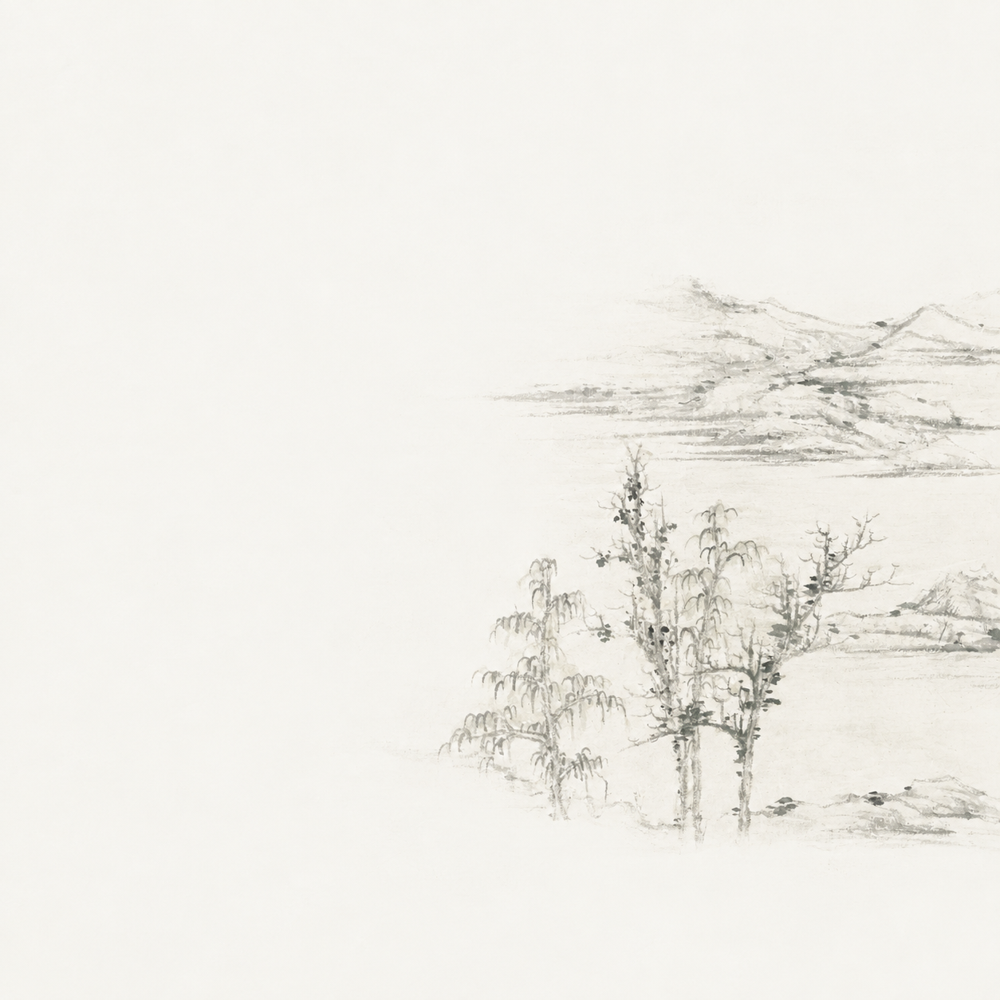
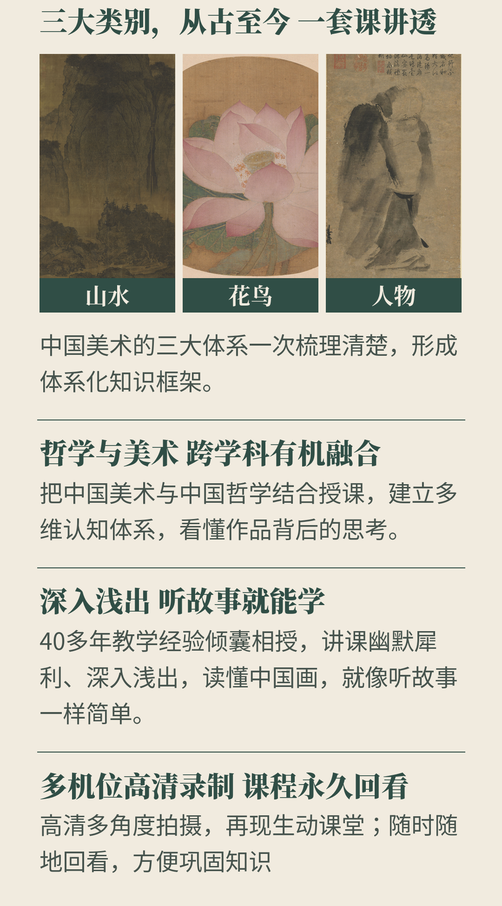
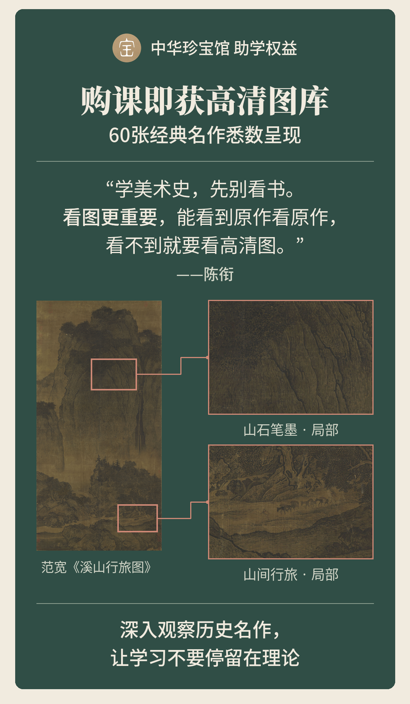

面对中国美术史上的经典，
我们常常会有这样的疑问：
色彩不丰富？
画得也不“像”？
到底好在哪？
一件作品的技法与形式，往往都是创作者观念与思考的呈现。它们背后，也承载着中国人千年来对生活、自然与世界的理解。
陈衔老师将带领大家从观念的演变出发，理解不同时代、不同题材的作品，如何呈现中国人的生活理想。
由此，我们才能真正看见
中国美术史的精彩所在。
老师介绍
长期从事中西方美术史教学，开设《道家与中国古代绘画》《哲学入门》等课程，擅长从观念演变的角度讲解艺术史，深入浅出、生动活泼。

面对中国美术史上的经典，
我们常常会有这样的疑问：
色彩不丰富？
画得也不“像”？
到底好在哪？
一件作品的技法与形式，往往都是创作者观念与思考的呈现。它们背后，也承载着中国人千年来对生活、自然与世界的理解。
陈衔老师将带领大家从观念的演变出发，理解不同时代、不同题材的作品，如何呈现中国人的生活理想。
由此，我们才能真正看见
中国美术史的精彩所在。
长期从事中西方美术史教学，开设《道家与中国古代绘画》《哲学入门》等课程，擅长从观念演变的角度讲解艺术史，深入浅出、生动活泼。


课程更新中，大纲仅供参考，以最终上线题目为准
第1讲
中国古代山水画概览
第2讲
山水画的两种风格——文人画与院体画
第3讲
山水画的情怀与园林
第4讲
山水画的演变：从隋到南宋
第5讲
山水画的演变：元代山水（上）
第6讲
山水画的演变：元代山水（下）
第7讲
山水画的演变：明代山水（上）
第8讲
山水画的演变：明代山水（下）
第9讲
山水画的演变：清代山水
第10讲
山水画的演变：近代以来的山水画
第1讲
中国古代花鸟画概览
第2讲
花鸟画的两种风格——工笔画与写意画
第3讲
花鸟画中的文人意趣
第4讲
花鸟画的雏形：从唐到五代
第5讲
花鸟画的鼎盛：宋代花鸟（上）
第6讲
花鸟画的鼎盛：宋代花鸟（下）
第7讲
花鸟画的演变：元代花鸟
第8讲
花鸟画的演变：明代花鸟
第9讲
花鸟画的演变：清代花鸟
第10讲
花鸟画的演变：近代以来的花鸟画
第1讲
中国人物画概览（上）
第2讲
中国人物画概览（下）
第3讲
唐宋时期的人物画特征
第4讲
明清时期的人物画特征
下单后，请在微信搜索
“小鹅通学员版”小程序
或在软件商店下载“小鹅通学员版”APP
↓
用购课手机号绑定登录
↓
查看已购课程开始学习
如领取不成功，可联系订单客服处理
课程
持续更新中，共3大系列24章节
确认
请确认填写可接收课程通知短信的手机号
形式
本商品为线上视频课，不是书，不发快递
退款
课程产品开通后不支持任何理由退款
有效
购买后该视频长期有效